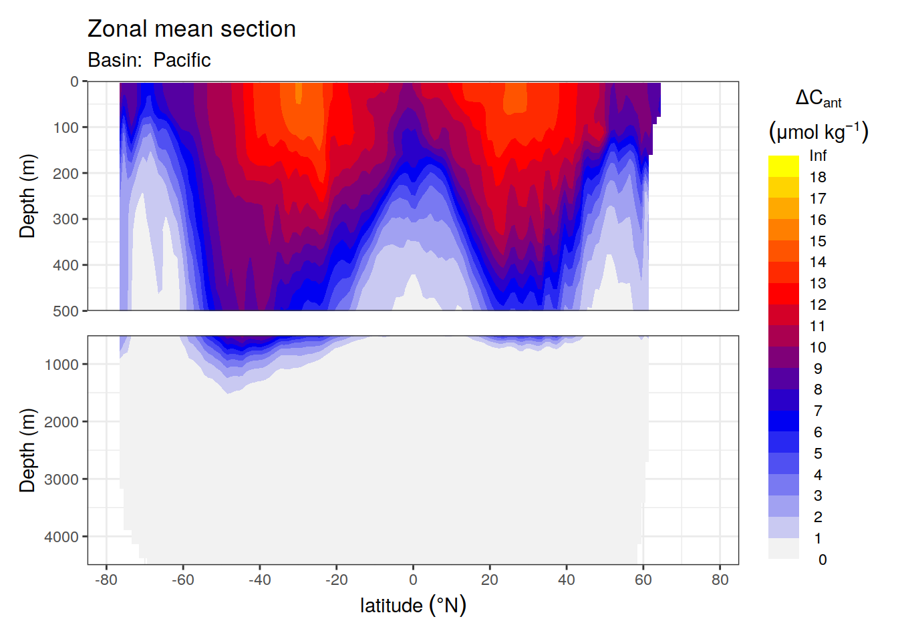

FESOM_REcoM_LR Cant variable climate AD
Jens Daniel Müller
28 September, 2021
Last updated: 2021-09-28
Checks: 7 0
Knit directory: emlr_mod_preprocessing/
This reproducible R Markdown analysis was created with workflowr (version 1.6.2). The Checks tab describes the reproducibility checks that were applied when the results were created. The Past versions tab lists the development history.
Great! Since the R Markdown file has been committed to the Git repository, you know the exact version of the code that produced these results.
Great job! The global environment was empty. Objects defined in the global environment can affect the analysis in your R Markdown file in unknown ways. For reproduciblity it’s best to always run the code in an empty environment.
The command set.seed(20200707) was run prior to running the code in the R Markdown file. Setting a seed ensures that any results that rely on randomness, e.g. subsampling or permutations, are reproducible.
Great job! Recording the operating system, R version, and package versions is critical for reproducibility.
Nice! There were no cached chunks for this analysis, so you can be confident that you successfully produced the results during this run.
Great job! Using relative paths to the files within your workflowr project makes it easier to run your code on other machines.
Great! You are using Git for version control. Tracking code development and connecting the code version to the results is critical for reproducibility.
The results in this page were generated with repository version 41dc03c. See the Past versions tab to see a history of the changes made to the R Markdown and HTML files.
Note that you need to be careful to ensure that all relevant files for the analysis have been committed to Git prior to generating the results (you can use wflow_publish or wflow_git_commit). workflowr only checks the R Markdown file, but you know if there are other scripts or data files that it depends on. Below is the status of the Git repository when the results were generated:
Ignored files:
Ignored: .Rhistory
Ignored: .Rproj.user/
Unstaged changes:
Modified: code/Workflowr_project_managment.R
Note that any generated files, e.g. HTML, png, CSS, etc., are not included in this status report because it is ok for generated content to have uncommitted changes.
These are the previous versions of the repository in which changes were made to the R Markdown (analysis/ORCA025_Cant_AD.Rmd) and HTML (docs/ORCA025_Cant_AD.html) files. If you’ve configured a remote Git repository (see ?wflow_git_remote), click on the hyperlinks in the table below to view the files as they were in that past version.
| File | Version | Author | Date | Message |
|---|---|---|---|---|
| Rmd | 37b0e37 | Donghe-Zhu | 2021-08-24 | Adding REcoM and annual ORCA |
| Rmd | b5cd974 | Donghe-Zhu | 2021-07-15 | ORCA preprocessing |
# use only three basin to assign general basin mask
# ie this is not specific to the MLR fitting
basinmask <- basinmask %>%
filter(MLR_basins == "2") %>%
select(lat, lon, basin_AIP)1 Calculate annual Cant field
1.1 Read in Run A
# set name of model to be subsetted
model_ID <- "A"
# for loop across 4 periods
if (model_base == "mon") {
periods <-
c(
"19800101_19891231",
"19900101_19991231",
"20000101_20091231",
"20100101_20181231"
)
}
if (model_base == "ann") {
periods <-
c("1980-1989",
"1990-1999",
"2000-2009",
"2010-2018")
}
for (i_period in periods) {
# read in data
# i_period <- periods[1]
# for loop across variables
# 3d variables
variables <-
c("so", "thetao", "dissic")
for (i_variable in variables) {
# i_variable <- variables[1]
# read list of all files
file <-
list.files(
path = path_cmorized,
pattern = paste(
"^",
i_variable,
"_ORCA025-GEOMAR_",
model_ID,
"_1_gr_",
i_period,
"_v20210804.nc",
sep = ""
)
)
print(file)
# read in data
variable_data <-
tidync(paste(path_cmorized,
file,
sep = ""),
make_units = FALSE)
# convert to tibble
variable_data_tibble <- variable_data %>%
hyper_tibble()
# remove open link to nc file
rm(variable_data)
# remove na values
variable_data_tibble <-
variable_data_tibble %>%
filter(!is.na(!!sym(i_variable)))
if (model_base == "mon") {
# mutate year
variable_data_tibble <- variable_data_tibble %>%
mutate(year = year(time)) %>%
select(-time)
# calculate annual mean values
variable_data_tibble <- variable_data_tibble %>%
fgroup_by(lon, lat, depth, year) %>% {
add_vars(
fgroup_vars(., "unique"),
fmean(., keep.group_vars = FALSE) %>% add_stub(pre = FALSE, "_mean")
)
}
}
if (model_base == "ann") {
# mutate year
variable_data_tibble <- variable_data_tibble %>%
mutate(
year = 1980 + round((time - 182.25) / 365)
) %>%
select(-time)
}
# add variable per period together
if (exists("A_annual_temp")) {
A_annual_temp <- left_join(A_annual_temp, variable_data_tibble)
}
if (!exists("A_annual_temp")) {
A_annual_temp <- variable_data_tibble
}
rm(variable_data_tibble)
}
# add 4 period annual mean together
if (exists("A_annual")) {
A_annual <- bind_rows(A_annual, A_annual_temp)
}
if (!exists("A_annual")) {
A_annual <- A_annual_temp
}
rm(A_annual_temp)
}[1] "so_ORCA025-GEOMAR_A_1_gr_1980-1989_v20210804.nc"
[1] "thetao_ORCA025-GEOMAR_A_1_gr_1980-1989_v20210804.nc"
[1] "dissic_ORCA025-GEOMAR_A_1_gr_1980-1989_v20210804.nc"
[1] "so_ORCA025-GEOMAR_A_1_gr_1990-1999_v20210804.nc"
[1] "thetao_ORCA025-GEOMAR_A_1_gr_1990-1999_v20210804.nc"
[1] "dissic_ORCA025-GEOMAR_A_1_gr_1990-1999_v20210804.nc"
[1] "so_ORCA025-GEOMAR_A_1_gr_2000-2009_v20210804.nc"
[1] "thetao_ORCA025-GEOMAR_A_1_gr_2000-2009_v20210804.nc"
[1] "dissic_ORCA025-GEOMAR_A_1_gr_2000-2009_v20210804.nc"
[1] "so_ORCA025-GEOMAR_A_1_gr_2010-2018_v20210804.nc"
[1] "thetao_ORCA025-GEOMAR_A_1_gr_2010-2018_v20210804.nc"
[1] "dissic_ORCA025-GEOMAR_A_1_gr_2010-2018_v20210804.nc"# harmonize column names and coordinates
A_annual <- A_annual %>%
select(year,
lon,
lat,
depth,
tco2_A = dissic,
sal = so,
theta = thetao) %>%
# mutate(lon = if_else(lon > 180, lon - 180, lon + 180)) %>%
mutate(lon = if_else(lon < 20, lon + 360, lon))
# calculate model temperature
A_annual <- A_annual %>%
mutate(temp = gsw_pt_from_t(
SA = sal,
t = theta,
p = 10.1325,
p_ref = depth
))
# unit transfer from mol/m3 to µmol/kg
A_annual <- A_annual %>%
mutate(
rho = gsw_pot_rho_t_exact(
SA = sal,
t = temp,
p = depth,
p_ref = 10.1325
),
tco2_A = tco2_A * (1e+6 / rho)
) %>%
select(year, lon, lat, depth, tco2_A)
# A_annual %>%
# write_csv(paste(path_preprocessing,
# "A_cant_annual_modified.csv",
# sep = ""))
#
# A_annual1 <- A_annual %>%
# mutate(lon = if_else(lon > 360, lon - 360, lon))
#
# A_annual2 <- A_annual1 %>%
# mutate(lon = if_else(lon > 180, lon - 180, lon + 180)) %>%
# mutate(lon = if_else(lon < 20, lon + 360, lon))
#
# ggplot() + geom_raster(data = A_annual2 %>%
# filter(year == 1994, depth == min(depth)),
# aes(lon,
# lat, fill = tco2_A))1.2 Read in Run D
# set name of model to be subsetted
model_ID <- "D"
# for loop across 4 periods
if (model_base == "mon") {
periods <-
c(
"19800101_19891231",
"19900101_19991231",
"20000101_20091231",
"20100101_20181231"
)
}
if (model_base == "ann") {
periods <-
c(
"1980-1989",
"1990-1999",
"2000-2009",
"2010-2018"
)
}
for (i_period in periods) {
# read in data
# i_period <- periods[1]
# for loop across variables
# 3d variables
variables <-
c("so", "thetao", "dissic")
for (i_variable in variables) {
# i_variable <- variables[1]
# read list of all files
file <-
list.files(
path = path_cmorized,
pattern = paste(
"^",
i_variable,
"_ORCA025-GEOMAR_",
model_ID,
"_1_gr_",
i_period,
"_v20210804.nc",
sep = ""
)
)
print(file)
# read in data
variable_data <-
tidync(paste(path_cmorized,
file,
sep = ""),
make_units = FALSE)
# convert to tibble
variable_data_tibble <- variable_data %>%
hyper_tibble()
# remove open link to nc file
rm(variable_data)
# remove na values
variable_data_tibble <-
variable_data_tibble %>%
filter(!is.na(!!sym(i_variable)))
if (model_base == "mon") {
# mutate year
variable_data_tibble <- variable_data_tibble %>%
mutate(year = year(time)) %>%
select(-time)
# calculate annual mean values
variable_data_tibble <- variable_data_tibble %>%
fgroup_by(lon, lat, depth, year) %>% {
add_vars(
fgroup_vars(., "unique"),
fmean(., keep.group_vars = FALSE) %>% add_stub(pre = FALSE, "_mean")
)
}
}
if (model_base == "ann") {
# mutate year
variable_data_tibble <- variable_data_tibble %>%
mutate(year = 1980 + round((time - 182.25) / 365),) %>%
select(-time)
}
# add variable per period together
if (exists("D_annual_temp")) {
D_annual_temp <- left_join(D_annual_temp, variable_data_tibble)
}
if (!exists("D_annual_temp")) {
D_annual_temp <- variable_data_tibble
}
rm(variable_data_tibble)
}
# add 4 period annual mean together
if (exists("D_annual")) {
D_annual <- bind_rows(D_annual, D_annual_temp)
}
if (!exists("D_annual")) {
D_annual <- D_annual_temp
}
rm(D_annual_temp)
}[1] "so_ORCA025-GEOMAR_D_1_gr_1980-1989_v20210804.nc"
[1] "thetao_ORCA025-GEOMAR_D_1_gr_1980-1989_v20210804.nc"
[1] "dissic_ORCA025-GEOMAR_D_1_gr_1980-1989_v20210804.nc"
[1] "so_ORCA025-GEOMAR_D_1_gr_1990-1999_v20210804.nc"
[1] "thetao_ORCA025-GEOMAR_D_1_gr_1990-1999_v20210804.nc"
[1] "dissic_ORCA025-GEOMAR_D_1_gr_1990-1999_v20210804.nc"
[1] "so_ORCA025-GEOMAR_D_1_gr_2000-2009_v20210804.nc"
[1] "thetao_ORCA025-GEOMAR_D_1_gr_2000-2009_v20210804.nc"
[1] "dissic_ORCA025-GEOMAR_D_1_gr_2000-2009_v20210804.nc"
[1] "so_ORCA025-GEOMAR_D_1_gr_2010-2018_v20210804.nc"
[1] "thetao_ORCA025-GEOMAR_D_1_gr_2010-2018_v20210804.nc"
[1] "dissic_ORCA025-GEOMAR_D_1_gr_2010-2018_v20210804.nc"# harmonize column names and coordinates
D_annual <- D_annual %>%
select(year,
lon,
lat,
depth,
tco2_D = dissic,
sal = so,
theta = thetao) %>%
# mutate(lon = if_else(lon > 180, lon - 180, lon + 180)) %>%
mutate(lon = if_else(lon < 20, lon + 360, lon))
# calculate model temperature
D_annual <- D_annual %>%
mutate(temp = gsw_pt_from_t(
SA = sal,
t = theta,
p = 10.1325,
p_ref = depth
))
# unit transfer from mol/m3 to µmol/kg
D_annual <- D_annual %>%
mutate(
rho = gsw_pot_rho_t_exact(
SA = sal,
t = temp,
p = depth,
p_ref = 10.1325
),
tco2_D = tco2_D * (1e+6 / rho)
) %>%
select(year, lon, lat, depth, tco2_D)
# D_annual %>%
# write_csv(paste(path_preprocessing,
# "D_cant_annual_modified.csv",
# sep = ""))1.3 Join tco2 fields
cant <- inner_join(A_annual, D_annual)
rm(A_annual, D_annual)1.4 Round depth levels
cant <- cant %>%
mutate(depth = round(depth))1.5 Apply basin mask
# restrict Cant field to basin mask grid
cant <- inner_join(cant, basinmask)1.6 Calculate Cant total
cant <- cant %>%
mutate(cant_total = tco2_A - tco2_D) %>%
select(-c(tco2_A, tco2_D))1.7 Write Cant files
# write annual Cant files
years <- c(1982:2018)
for (i_year in years) {
# i_year = years[1]
cant_year <- cant %>%
filter(year == i_year)
cant_year %>%
write_csv(paste(path_preprocessing,
"cant_annual_field_AD/cant_", i_year, ".csv",
sep = ""))
}2 Calculate change in Cant 1994 - 2007
cant_1994 <-
read_csv(paste(
path_preprocessing,
"cant_annual_field_AD/cant_1994.csv",
sep = ""
)) %>%
select(-c(year)) %>%
rename(cant_1994 = cant_total)
cant_2007 <-
read_csv(paste(
path_preprocessing,
"cant_annual_field_AD/cant_2007.csv",
sep = ""
)) %>%
select(-c(year)) %>%
rename(cant_2007 = cant_total)
cant_gruber <- left_join(cant_1994, cant_2007) %>%
mutate(cant = cant_2007 - cant_1994)
cant_gruber <- cant_gruber %>%
mutate(cant_pos = if_else(cant <= 0, 0, cant))
rm(cant_1994, cant_2007)3 Zonal mean sections
cant_gruber <- cant_gruber %>%
mutate(eras = "JGOFS/WOCE")
cant_gruber_zonal <- m_zonal_mean_section(cant_gruber)3.1 1994 - 2007
for (i_basin_AIP in unique(cant_gruber_zonal$basin_AIP)) {
print(
p_section_zonal(
cant_gruber_zonal %>% filter(basin_AIP == i_basin_AIP),
var = "cant_pos_mean",
plot_slabs = "n",
subtitle_text = paste("Basin: ", i_basin_AIP)
)
)
}
3.2 Cant total 1994
for (i_basin_AIP in unique(cant_gruber_zonal$basin_AIP)) {
print(
p_section_zonal(
cant_gruber_zonal %>% filter(basin_AIP == i_basin_AIP),
var = "cant_1994_mean",
plot_slabs = "n",
breaks = seq(0,100,10),
subtitle_text = paste("Basin: ", i_basin_AIP)
)
)
}3.3 Cant total 2007
for (i_basin_AIP in unique(cant_gruber_zonal$basin_AIP)) {
print(
p_section_zonal(
cant_gruber_zonal %>% filter(basin_AIP == i_basin_AIP),
var = "cant_2007_mean",
plot_slabs = "n",
breaks = seq(0,100,10),
subtitle_text = paste("Basin: ", i_basin_AIP)
)
)
}4 Column inventory
4.1 1994 - 2007
cant_gruber_inv <- m_cant_inv(cant_gruber)p_map_cant_inv(cant_gruber_inv %>% filter(inv_depth == 3000))4.2 Cant total 1994
# this is just a work around, because the function is designed to calculate cant inventories, but not cant_total inventories
cant_gruber_total_inv <- m_cant_inv(
cant_gruber %>%
select(-cant_pos) %>%
rename(cant_pos = cant_1994))p_map_cant_inv(cant_gruber_total_inv %>% filter(inv_depth == 3000),
breaks = seq(0,100,10),
subtitle_text = "Cant total in 1994")
4.3 Cant total 2007
# this is just a work around, because the function is designed to calculate cant inventories, but not cant_total inventories
cant_gruber_total_inv <- m_cant_inv(
cant_gruber %>%
select(-cant_pos) %>%
rename(cant_pos = cant_2007))p_map_cant_inv(cant_gruber_total_inv %>% filter(inv_depth == 3000),
breaks = seq(0,100,10),
subtitle_text = "Cant total in 2007")
sessionInfo()R version 4.0.3 (2020-10-10)
Platform: x86_64-pc-linux-gnu (64-bit)
Running under: openSUSE Leap 15.2
Matrix products: default
BLAS: /usr/local/R-4.0.3/lib64/R/lib/libRblas.so
LAPACK: /usr/local/R-4.0.3/lib64/R/lib/libRlapack.so
locale:
[1] LC_CTYPE=en_US.UTF-8 LC_NUMERIC=C
[3] LC_TIME=en_US.UTF-8 LC_COLLATE=en_US.UTF-8
[5] LC_MONETARY=en_US.UTF-8 LC_MESSAGES=en_US.UTF-8
[7] LC_PAPER=en_US.UTF-8 LC_NAME=C
[9] LC_ADDRESS=C LC_TELEPHONE=C
[11] LC_MEASUREMENT=en_US.UTF-8 LC_IDENTIFICATION=C
attached base packages:
[1] stats graphics grDevices utils datasets methods base
other attached packages:
[1] lubridate_1.7.9 gsw_1.0-5 testthat_3.0.1 stars_0.5-2
[5] sf_0.9-8 abind_1.4-5 tidync_0.2.4 ggforce_0.3.3
[9] metR_0.9.0 scico_1.2.0 patchwork_1.1.1 collapse_1.5.0
[13] forcats_0.5.0 stringr_1.4.0 dplyr_1.0.5 purrr_0.3.4
[17] readr_1.4.0 tidyr_1.1.3 tibble_3.1.3 ggplot2_3.3.3
[21] tidyverse_1.3.0 workflowr_1.6.2
loaded via a namespace (and not attached):
[1] fs_1.5.0 httr_1.4.2 rprojroot_2.0.2
[4] tools_4.0.3 backports_1.1.10 utf8_1.1.4
[7] R6_2.5.0 KernSmooth_2.23-18 DBI_1.1.0
[10] colorspace_2.0-0 withr_2.3.0 tidyselect_1.1.0
[13] compiler_4.0.3 git2r_0.27.1 cli_2.2.0
[16] rvest_0.3.6 RNetCDF_2.4-2 xml2_1.3.2
[19] isoband_0.2.3 labeling_0.4.2 scales_1.1.1
[22] checkmate_2.0.0 classInt_0.4-3 digest_0.6.27
[25] rmarkdown_2.10 pkgconfig_2.0.3 htmltools_0.5.0
[28] highr_0.8 dbplyr_1.4.4 rlang_0.4.10
[31] readxl_1.3.1 rstudioapi_0.13 farver_2.0.3
[34] generics_0.1.0 jsonlite_1.7.2 magrittr_2.0.1
[37] ncmeta_0.3.0 Matrix_1.2-18 Rcpp_1.0.5
[40] munsell_0.5.0 fansi_0.4.1 lifecycle_1.0.0
[43] stringi_1.5.3 whisker_0.4 yaml_2.2.1
[46] MASS_7.3-53 grid_4.0.3 blob_1.2.1
[49] parallel_4.0.3 promises_1.1.1 crayon_1.3.4
[52] lattice_0.20-41 haven_2.3.1 hms_0.5.3
[55] knitr_1.33 pillar_1.6.2 reprex_0.3.0
[58] glue_1.4.2 evaluate_0.14 RcppArmadillo_0.10.1.2.2
[61] data.table_1.13.6 modelr_0.1.8 vctrs_0.3.8
[64] tweenr_1.0.2 httpuv_1.5.4 cellranger_1.1.0
[67] gtable_0.3.0 polyclip_1.10-0 assertthat_0.2.1
[70] xfun_0.25 lwgeom_0.2-5 broom_0.7.5
[73] RcppEigen_0.3.3.9.1 e1071_1.7-4 later_1.2.0
[76] class_7.3-17 ncdf4_1.17 units_0.6-7
[79] ellipsis_0.3.2